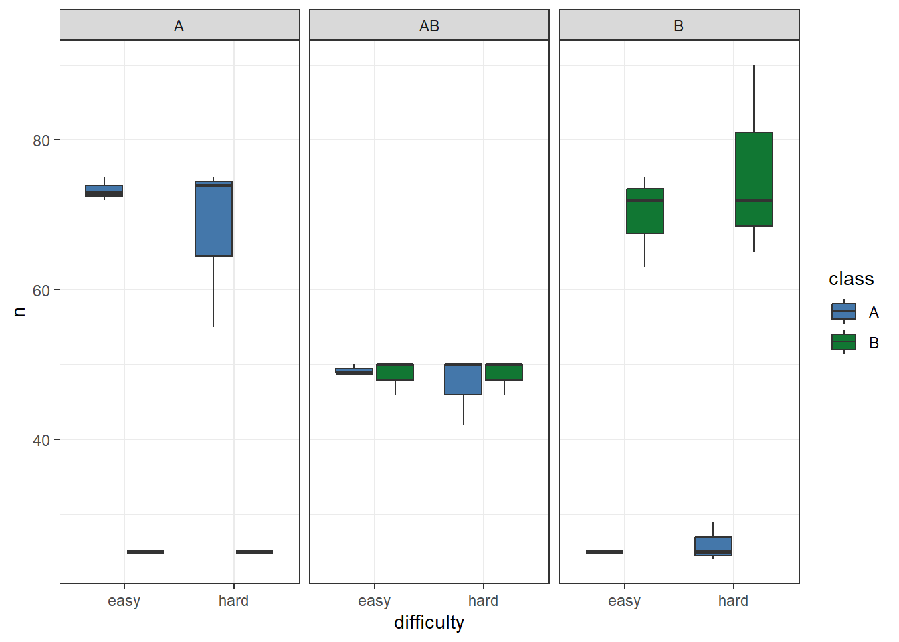
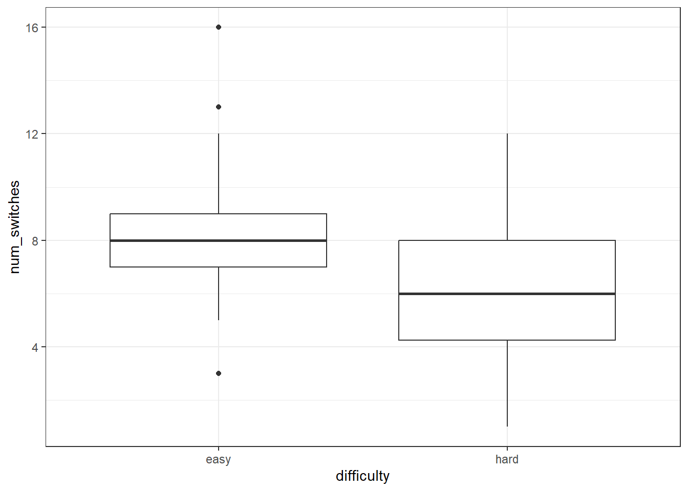
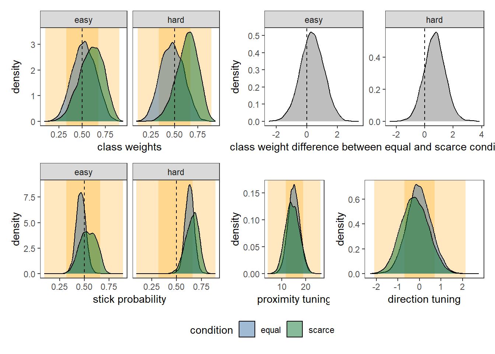

library(tidyverse)
library(cmdstanr)
library(tidybayes)
library(patchwork)
options(mc.cores = parallel::detectCores())
# set ggplot2 theme
theme_set(theme_bw())
source("../functions/parse_pavlovia_data.R")
source("../functions/prep_data.R")
source("../functions/plot_model.R")
source("../functions/post_functions.R")
exptname <- "pilot feature conjunction"3 Fit model to pilot data
We now demonstrate fitting our model to a small amount of pilot data (3 participants, each performing 5 trials in all 6 conditions).
Generating d list and d found
First we read in the data and generate d_list and d_found.
folder = paste0("../data/", exptname, "/")
savefolder = paste0("../output/", exptname, "/")
files <- dir(folder, ".csv")
# first make a dataframe of all found targets and save
d_found <- tibble()
d_stim <- tibble()
for (pp in 1:length(files)) {
d_new <- parse_exp_data(read_csv(paste0(folder, files[pp]),
show_col_types = FALSE))
d_found_pp <- d_new$found
d_stim_pp <- d_new$stim
d_found <- rbind(d_found, d_found_pp)
d_stim <- rbind(d_stim, d_stim_pp)
rm(d_new, d_found_pp, d_stim_pp)
}
write_csv(d_found, paste0(savefolder, "d_found.csv"))
write_csv(d_stim, paste0(savefolder, "d_stim.csv"))Some data checking
Here we demonstrate some simple data checks: firstly, that we see the expected number of targets of each type in each condition, and secondly, that we empirically see more switches in the easy, feature conjunction (as has been found in previous studies).
########################################################
# Some data checking #
########################################################
# How many trials does each person have?
d_found %>%
group_by(person, common, difficulty) %>%
summarise(total_trials = length(unique(trial))) -> total_trials
# How many targets of each class did people find?
d_found %>%
count(person, common, difficulty, class) -> total_found
# Do hard trials seem easier?
ggplot(total_found, aes(difficulty, n, fill = class)) + geom_boxplot() + facet_grid(~common)
# Number of runs?
d_found %>%
group_by(person, common, difficulty, trial) %>%
mutate(switch = ifelse(class != lag(class), 1, 0)) %>%
summarise(num_switches = sum(switch, na.rm = TRUE)) -> total_switches
ggplot(total_switches, aes(difficulty, num_switches)) + geom_boxplot() 
Read in data
This prepares the data for modelling.
source("../functions/import_data.R")
d <- import_data("hughes2024pilot")Prepare and fit model
Here we prepare and fit the model.
d_list <- prep_data_for_stan(d$found, d$stim, c("spatial", "item_class"))
# most priors should be the same for different 1.x model versions
d_list <- add_priors_to_d_list(d_list)
mod <- cmdstan_model("../models/multi_level/foraging_model1.stan")
m <- mod$sample(data = d_list, chains = 4, parallel_chains = 4)
m$save_object(paste0("../output/", exptname, "/foraging_pilot.RDS"))Plot model
Finally, we plot the model. Despite the small number of participants, the trend is for the data to be in the direction of our hypotheses.
m <- readRDS(paste0("../output/", exptname, "/foraging_pilot.RDS"))
cl <- unique(d$found$condition)
post <- extract_post(m, d$found, cl)
# we want to merge conditions. Anna will explain why.
post$fixed %>%
separate(condition, into = c("difficulty", "condition")) %>%
mutate(bA = if_else(condition == "A", -bA, bA),
condition = if_else(condition == "AB", "equal", "scarce")) -> post$fixed
plot_model_fixed(post,m, d$found, cl) #, merge_conditions = TRUE
ggsave(ggsave("../plots/pilot_data.pdf", width = 8, height = 4))